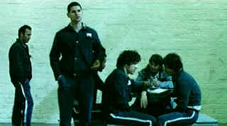

| Chopper
(SE) /B+,B |
| Image/2000/90/ANA
1.77 |
.
The Australian film Chopper is a
frightening depiction of habitual criminal and murderer Mark
“Chopper” Read. The film is based on best selling books by Read and
interviews conducted by writer/director Andrew Dominik. This is an extremely violent
film. Blush gushes with casual abandon. A powerful assault, Chopper,
just like its protagonist, is no-holds-barred filmmaking. It's not for
the feint of heart or weak of stomach, but for movie lovers who can get
by the bloody barriers, Chopper is a worthwhile viewing experience.
 |
| Chopper
challenges for control. ©Image |
Chopper is an incredible
character; unpredictable, a swirling wind of dark black clouds, violent, innocent, loud
and always dangerous. Dominik uses a time-shifting approach, starting
from the vantage point of Chopper's second prison term and
following a younger Chopper in and out of prison. Half the film takes place in
prison, but it feels unlike any other prison film I’ve seen. The walls
are a background for Chopper's portrait. In prison, Read asserts
himself, proving himself number one in his cell block. Once you see Chopper
in action every step he takes will be in nitro-glycerin shoes. The
patterns of behavior we first witness are repeated once Chopper
is released after a ten year term. Revenge, self preservation, regret
and violence mingle like raindrops on dry dirt, spattering in every
direction.
Chopper
is thoroughly skillful filmmaking.
Some script elements are a trifle confusing but the flow is never
less than riveting. Dominik excellent sense of pace and place enrich the
film. If Chopper falls short it's due to the piecemeal
storytelling.
The visual style relates to documentary in the hand-held camera shots,
but it veers off sharply and effectively. Dominik uses an assortment of chilling washed out
hot colors, bordering on surreal, to capture Chopper's world..
Strong regional Australian accents pose some challenge, but I
don’t think I missed too much.
Eric
Bana is terrific as Chopper. I found it hard to distinguish between
Bana's performance and the character. Bana is physicality is explosive.
He magically turns from a young Chopper into a somewhat older and
more robust Chopper. Supporting performances are effectively
lean. The DVD transfer is a
pretty good representation of the original material. Sometimes very
grainy, almost always stylized, there's plenty of grain, but it's
consistent and effective. Lighting preserves the garish elements of Chopper's
world. Shadow detail is good. Black levels are adequate. Color is
saturated effectively in keeping with the quasi-documentary look.
Overall sharpness is good enough. Sometimes I wanted a bit more
resolution to examine the reflections of madness in Chopper's
eyes, but again, the DVD is likely true to the transfer elements.
Two
audio commentaries are selectable. Director Andrew Dominik provides
observations on one track and Mark "Chopper" Read provides his
often off-center comments on another commentary. His casual attitude
toward the depicted violence is another level of frightening. There also
deleted scenes with perfect explanations
Some of the original interview footage with Chopper is also part
of the special edition. Try it at your won risk!
|
|
|
|

Selections from the Feature Archive include articles on
Akira Kurosawa, Blonde Bimbos,
Frank
Darabont, Steven Culp,
John
Herzfeld or Vietnam: The
Hollywood Pariah, and many more....
Director Walks the Wire
Balanced by an armor of movie lore and filmmaking daring, director John Herzfeld is comfortable
walking the high wire. Check out this interview by Stu Kobak.

L.A. Confidential (SE) /A,A

Unquestionably the best picture of 1997. Top-notch entertainment with superb
acting.

The major studio vaults are filled with incredible film treasures which
few have seen the light of DVD.
Open the Vaults


The
Movie Poster Archive includes extensive poster images from the films of stars like Susan Hayward,
Kirk Douglas, Katharine Hepburn and many more. Our featured star is James Mason
|